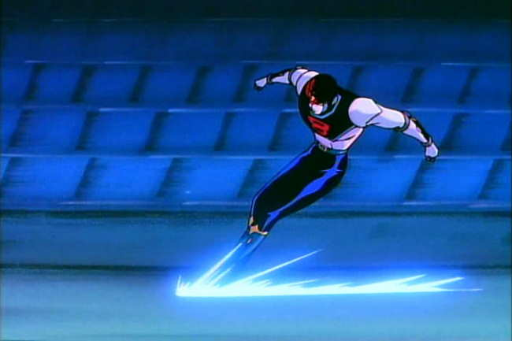
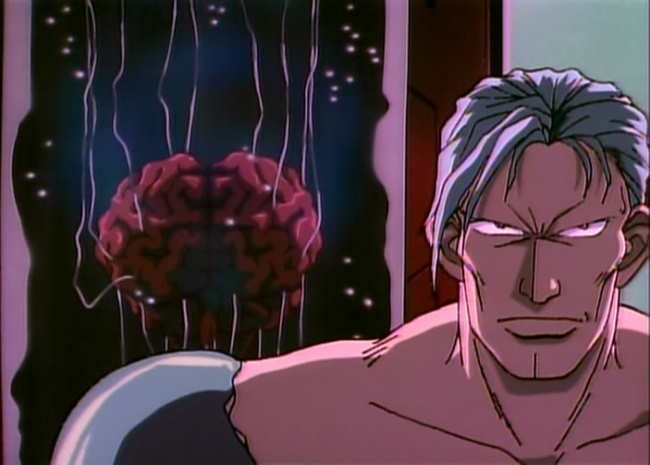
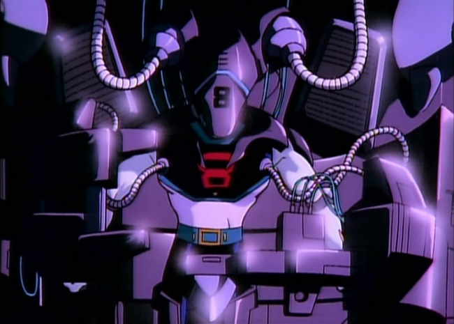
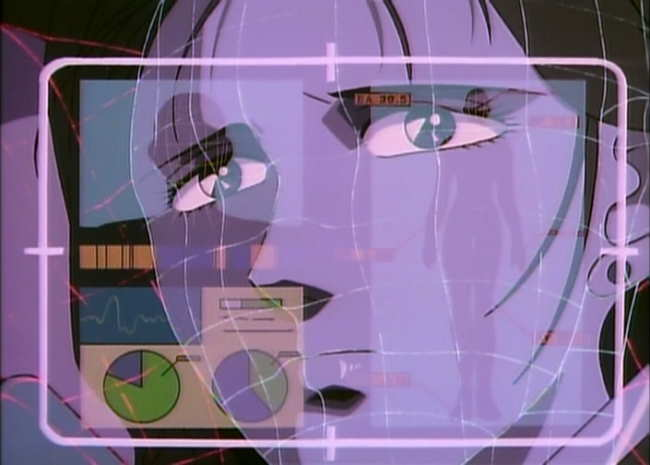
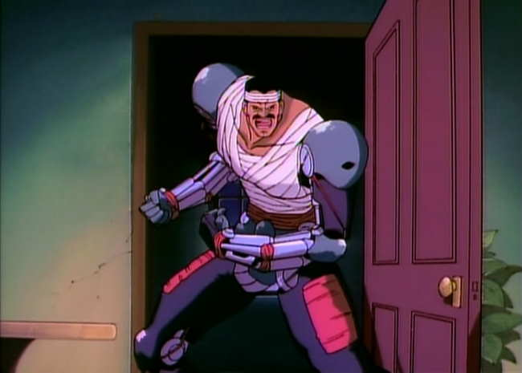
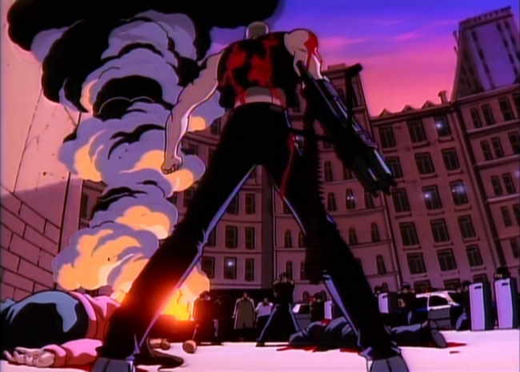
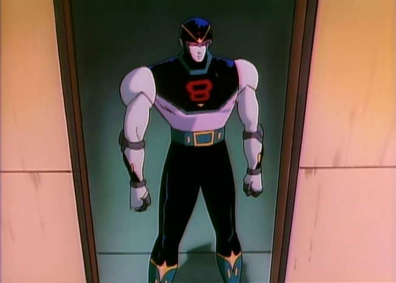

Movie review by : SFAM
Year : 1993
Directed by : Sumiyoshi Furakawa
Written by : Yasushi Hirano (story), Kazumasa Hirai & Jirô Kuwata (characters)
Degree of Cyberpunk visuals : Low
Correlation to Cyberpunk themes : High
Rating : 7/10

Overview: If you're hankering for a sequel to Robocop, skip the live action sequels, and instead get 8 Man After. You won't get the best animation, but the story itself is more than passable. The characters aren't all that deep, but they're interesting enough to keep your attention. This OVA, which on the DVD is presented as a film, seems to rise above the obviously meager animation budget to produce a decent product.

The Story: 8 Man After is a sequel to the 1960s TV series called 8th Man (I have not seen the original). In 8th Man, a cop dies, is revived, and is given a cybernetic body that can move lightning fast. He uses it to confront a cyborgs crime lord in similar circumstances, but is later killed. His girlfriend, Sachiko Yokogawa, never learns what happens to him. Since then, petty criminals with cybernetic implants have started to rule the streets. The police are outgunned, and decide they need a special edge ? so they decide to revive the 8 Man.
In 8 Man After, a similar situation occurs as in the original ? this time, police detective Hazama Itsuro, an emotionally fragile cop, meets up with Sachiko on a chance encounter, and they begin to fall in love. But fate intervenes, and a nasty criminal with cyborgs implants comes to kill them. Hazama is able to defeat him, but seemingly dies in the process by falling out of a high story window. Hazama is revived when the police take Hazama's brain and insert it into 8 Man's body.

Hazama can now move lightning fast, and due to technical reasons, is the most advanced cyborgs on earth. He begins to fight the bad guys, but unfortunately, it turns out that his emotional troubles cause him to occasionally lose control over his actions. This is complicated by Hazama's continuing relationship with Sachiko, who does not know what he's become. Things come to a head when Hazama/8 Man goes up against the crime lord while trying to rescue Sachiko.

This is a "Who am I?" Story: 8 Man After does a decent job of going over established ground in that it questions whether a brain inserted into a cyborgs host is still human. The complicating twist in 8 Man's case is that his emotions end up making him temporarily lose control over his body, and in fact, lose awareness over certain events. The added relationship aspect, where Sachiko has now fallen in love with two people who end up losing their bodies is sort of interesting as well. Again, there's nothing really new here, but it is well done.

The Animation: At some level, animation of this quality, five years after Akira is surprising. Many of the shots look like straight Saturday morning cartoon fodder. Every now and then, we get a terrific shot or two, and sometimes get an innovating looking camera approach, but for the most part, you get simplistic backgrounds, very basic character designs, linear movement, and lots of pan and scans of stills. Worse, you also get some repeated 8 Man after streaking shots. Without an absolutely kickin story (which it has), 8 Man After just wouldn't be worth the time.

The Violence: Like Robocop, 8 Man After is very violent. However, the animation isn't good enough for this to really matter all that much. There is lots of blood and killing which is usually don't in the context of a motivating story, but it just doesn't have the impact of many violent animes. Even if you can't stomach violent story lines, you will probably be OK with 8 Man After.

The Bottom Line: OK, the animation isn't the greatest, but the story is pretty good ? FAR better than the Robocop sequels. The sub-plot of the son with a burnt-out cyborg father is especially well done. If you're looking for a Robocop-like examination of humanity, animated from the cyborg's perspective, 8 Man After is a decent choice.